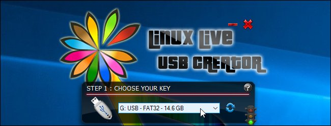

How-To Geek
How to Create a Live Ubuntu USB Drive With Persistent Storage
A Linux live USB drive is normally a blank slate each time you boot it. You can boot it up, install programs, save files, and change settings. But, as soon as you reboot, all your changes are wiped away and you’re back to a fresh system. This can be useful, but if you want a system that picks up where you left off, you can create a live USB with persistent storage.
How Persistent Storage Works
When you create a USB drive with persistence, you’ll allocate up to 4 GB of the USB drive for a persistent overlay file. Any changes you make to the system—for example, saving a file to your desktop, changing the settings in an application, or installing a program—will be stored in the overlay file. Whenever you boot the USB drive on any computer, your files, settings, and installed programs will be there.
This is an ideal feature if you want to keep a live Linux system on a USB drive and use on different PCs. You won’t have to set up your system up from scratch each time you boot. You don’t need persistence if you’re just using a USB drive to install Ubuntu and then running it from your hard drive afterwards.
There are a few limitations. You can’t modify system files, like the kernel. You can’t perform major system upgrades. You also can’t install hardware drivers. However, you can install most applications. You can even update most installed applications, so you can be sure your persistent USB drive has the latest version of the web browser you prefer.
Persistence doesn’t work with every Linux distribution. It does with with Ubuntu and Ubuntu-based Linux distributions, as well as Fedora Linux. The process for setting up persistence is similar on all supported Linux distributions. Just download the appropriate ISO file and follow the instructions below if you want to use another Ubuntu flavor or Fedora.
How to Make a Persistent Ubuntu USB Drive on Windows
You’ll need a large enough USB drive to set up persistence. Ubuntu itself claims it needs 2 GB of storage on the USB drive, and you’ll also need extra space for the persistent storage. So, if you have a 4 GB USB drive, you can only have 2 GB of persistent storage. To have the maximum amount of persistent storage, you’ll need a USB drive of at least 6 GB in size.
Unfortunately, the Rufus tool that Ubuntu officially recommends for creating live Ubuntu USB drives on Windows doesn’t offer support for creating systems with persistent storage. While we recommend using Rufus to create most Ubuntu live USB drives, we’ll have to use a different tool for this particular job.
Download the Ubuntu ISO file you want to place on the USB drive and the Linux Live USB Creator application.
Insert the USB drive you want to use into your computer’s USB port and launch the “LiLi USB Creator” application you just installed.
Select the USB drive you want to use in the “Step 1: Choose Your Key” box.

Provide your downloaded Ubuntu ISO file. Click the “ISO / IMG / ZIP” button under “Step 2: Choose a Source”, browse to the .ISO file on your computer, and double-click it.
Use the options in the “Step 3: Persistence” section to select how much space your want to use for persistent storage on the USB drive. Drag the slider all the way to the right to select the maximum amount of storage.
You’ve now configured all the settings you need to configure. To create your live USB drive with persistent storage, click the lightning icon under “Step 5: Create”.
![]()
Give the tool some time to create the drive. When the process is done, you’ll see a “Your LinuxLive key is now up and ready!” message. You can now either reboot your computer and boot from the USB drive or unplug the USB drive, take it to another computer, and boot it there.
To confirm that persistent storage is working properly, boot the USB drive and create a folder on the desktop, or save a file to the desktop. Then, shut down your system and boot the live USB drive again. You should see the folder or file you placed on the desktop.
-
So now one can use a version of Ubuntu to behave like Puppy Linux that has been around for like ages. Just wondering if this will allow a Mint distro to be created that absolutely requires additional nVidia graphic drivers to be downloaded and installed to function well. Does one repeat this process every time or are people with nVidia graphics chips s**t out of luck?
Puppy Linux on the other hand allows this without any problem.
![]()

![]()
![]()
![]()
![]()
![]()
![]()
![]()
So now one can use a version of Ubuntu to behave like Puppy Linux that has been around for like ages. Just wondering if this will allow a Mint distro to be created that absolutely requires additional nVidia graphic drivers to be downloaded and installed to function well. Does one repeat this process every time or are people with nVidia graphics chips s**t out of luck?
Puppy Linux on the other hand allows this without any problem.